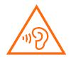

Phone Diagram
Thank You
Thank you for choosing Skylynx X1
Long press the power button to turn on the device.
Follow the on-screen instructions to configure the device.
More Information
For more information, visit our official website www.skylynx.com
Skylynx UI
Skylynx F1 comes pre-installed with Skylynx UI, our customised Android-based OS which pushes frequent updates and user-friendly features suggested by over 50 million active users worldwide. For more information, please visit www.skylynxui.com.
Sim Tray Diagram
About Dual Sim
- Dual 4G SIM requires the support of local telecom operator services, and may not be available in all regions.
- Only certain regions and telecom operators support VoLTE.
- System updates may be applied when network optimization occurs. For details, please refer to the system version in use on the device.
Disposal
Correctly dispose of this product. This marking indicates that this product should not be disposed with other household wastes throughout the EU. To prevent possible harm to the environment or human health from uncontrolled waste disposal, recycle responsibly to promote the sustainable reuse of material resources. To safely recycle your device, please use return and collection systems or contact the retailer where the device was originally purchased.
For Environment Declaration, pls. refer to below link:
https://www.skylynx.com/en/about/environment
CAUTION
RISK OF EXPLOSION IF BATTERY IS REPLACED BY AN INCORRECT TYPE. DISPOSE OF USED BATTERIES ACCORDING TO INSTRUCTIONS.
|  |
To prevent possible hearing damage, do not listen at high volume levels for long periods. |
For more important safety information, pls. refer to User Manual in below link:
http://www.skylynx.com/en/certification/
Important Safety Information
Read all the safety information below before using your device.
Using unauthorized cables, power adapters, or batteries can cause fire, explosion, or pose other risks.
Use only authorized accessories which are compatible with your device.
This device’s operating temperature range is 0~40. Using this device in the environments outside of this temperature range may damage the device.
If your device is provided with a built-in battery, don’t attempt to replace the battery yourself to avoid damaging the battery or the device.
Charge this device only with the included or authorized cable and power adapter. Using other adapters may cause fire, electric shock, and damage the device and the adapter.
After charging is complete, disconnect the adapter from both the device and the power outlet.
Do not charge the device longer than 12 hours.
The battery must be recycled or disposed of separately from household waste. Mishandling the battery may cause fire or explosion. Dispose or recycle the device, its battery and accessories according to the local regulations.
Do not disassemble, hit, crush, or burn the battery. In case of deformation, stop using the battery immediately.
- Do not short circuit the battery to avoid overheating, burns, or other personal injuries.
- Do not place the battery in the high-temperature environments. Overheating may cause explosion.
- Do not disassemble, hit, or crush the battery to avoid battery leaks, overheating, or explosion.
- Do not burn the battery to avoid fire or explosion.
- In case of deformation, stop using the battery immediately.
Keep your device dry.
Do not try to repair the device yourself. If any part of the device does not work properly, contact Mi customer support or bring your device to an authorized repair center.
Connect other devices according to their instruction manuals. Do not connect incompatible devices to this device.
For AC/DC Adapter, the socket-outlet shall be installed near the equipment and shall be easily accessible.
Safety Precautions
- Follow relevant laws and regulations. Do not use your phone in the following environments.
- Do not use your phone in a potentially explosive environments include fuelling areas, below decks on boats, fuel or chemical transfer or storage facilities, areas where the air contains chemicals or particles, such as grain, dust, or metal powders. Obey all posted signs to turn off wireless devices such as your phone or other radio equipment.
- Do not use your phone in the hospital operating rooms, emergency rooms, or intensive care units.Please consult your doctor and the device manufacturer to determine if operation of your phone may interfere with the operation of your medical device.To avoid potential interference with the pacemaker.keep a minimum separation of 15 cm be maintained between the mobile phone and the pacemaker. To achieve this use the phone on the opposite ear to your pacemaker and do not carry it in a breast pocket.Do not use your phone near hearing aids, cochlear implants, etc to avoid interference with medical equipment.
- Respect aircraft safety regulations and turn off your phone on board the aircraft when required.
- When driving a vehicle, use your phone in accordance with the relevant traffic laws and regulations.
- To avoid lightning strike, do not use your phone outdoors during thunderstorms.
- Do not use your phone to make calls while it is charging.
- Do not use your phones in places with high humidity such as bathrooms. Doing so may result in electric shock, injury, fire, and charger damage.
- Observe any rules which restrict using mobile phones in specific cases and environments.
Security Notice
Update your phone’s operating system using the built-in software update feature, or visit our authorized service outlets. Updating software through other means may damage the device or result in data loss, security issues, and other risks.
EU Regulations
RED Declaration of Conformity |
|
|
We, Skylynx Communications Co., Ltd. |
Hereby, Skylynx Communications Co., Ltd. declares that this GSM/GPRS/EDGE/UMTS/LTE Digital Mobile Phone with Bluetooth and WiFi X2105F10B is in compliance with the essential requirements and other relevant provisions of the RE Directive 2014/53/EU.The full text of the EU declaration of conformity could be consulted at www.skylynx.com/en/certification
Body-worn SAR testing has been carried out at a separation distance of 5 mm.To meet RF exposure guidelines during body-worn operation, the device should be positioned at least this distance away from the body.
If you are not using an approved accessory ensure that whatever products used is free of any metal and that it positions the phone with the indicated distance away from the body.
Receiver Category 2
Legal Information
This device may be operated in all member states of the EU.
Observe national and local regulations where the device is used.
This device is restricted to indoor use only when operating in 5150 to 5350Mhz frequency range in following countries:
Ensure the power adapter used meets the requirements of Clause 2.5 in IEC60950-1/EN60950-1 and has been tested and approved according to national or local standards.
Manufacturer:
The Rainbow City of China Resources, NO.69, Qinghe Middle Street, Haidian District, Beijing, China 100085
Frequency Bands and Power
This mobile phone offers the following frequency bands in EU areas only and maximum radio-frequency power:
GSM 900: 35 dBm
GSM 1800: 32 dBm
UMTS band 1/8: 25 dBm
LTE band 1/3/7/8/20/38/40: 25.7 dBm
Bluetooth: 20 dBm
Wi-Fi 2.4 GHz band: 20 dBm
Wi-Fi 5 GHz band: 20 dBm
FCC Regulations
This mobile phone complies with part 15 of the FCC Rules. Operation is subject to the following two conditions: (1) This device may not cause harmful interference, and (2) this device must accept any interference received, including anterference that may cause undesired operation.
This mobile phone has been tested and found to comply with the limits for a Class B digital device, pursuant to Part 15 of the FCC Rules.
These limits are designed to provide reasonable protection against harmful interference in a residential installation. This equipment generates, uses and can radiated radio frequency energy and, if not installed and used in accordance with the instructions, may cause harmful interference to radio communications. However, there is no guarantee that interference will not occur in a particular installation If this equipment does cause harmful interference to radio or television reception, which can be determined by turning the equipment off and on, the user is encouraged to try to correct the interference by one or more of the following measures:
- Reorient or relocate the receiving antenna.
- Increase the separation between the equipment and receiver.
- Connect the equipment into an outlet on a circuit different from that to which the receiver is connected.
- Consult the dealer or an experienced radio/TV technician for help.
RF Exposure Information (SAR)
This device meets the government’s requirements for exposure to radio waves. This device is designed and manufactured not to exceed the emission limits for exposure to radio frequency (RF) energy. The exposure standard for wireless device employs a unit of measurement known as the Specific Absorption Rate, or SAR.
The SAR limit set by the FCC is 1.6W/Kg. For body worn operation, this device has been tested and meets the FCC RF exposure guidelines for use with an accessory that contains no metal and be positioned a minimum of 1.0 cm from the body. Use of other accessories may not ensure compliance with FCC RF exposure guidelines. If you do not use a body-worn accessory and are not holding the device at the ear, position the handset a minimum of 1.0 cm from your body when the device is switched on.
FCC Note
Changes or modifications not expressly approved by the party responsible for compliance could void the user's authority to operate the equipment.
E Label
This device has an electronic label for certification information.
To access it , please select Settings > About Phone > Verification or select Setting, then type "Verification" into the search bar.
Important Safety Info
SAR 10g limit: 2.0W/Kg, SAR Value: Head: 0.537 W/Kg, Body: 1.582 W/Kg (5mm distance).
SAR 1g limit: 1.6W/Kg, SAR Value: Head: 0.66 W/Kg, Body-worn: 1.18 W/Kg (10mm distance).
Hotspot: 1.15 W/Kg (10mm distance).
Temperature
Temperature 0° - 40°
Model: X2105F10B
2105 indicates the date of putting the product on the market is 202105